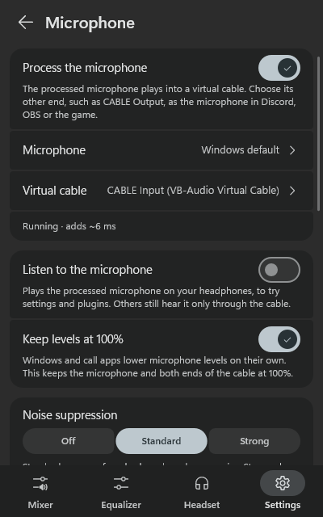
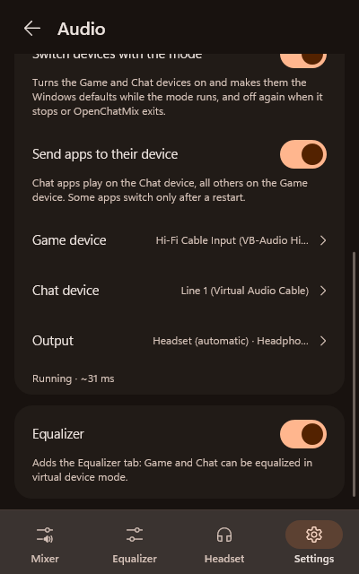
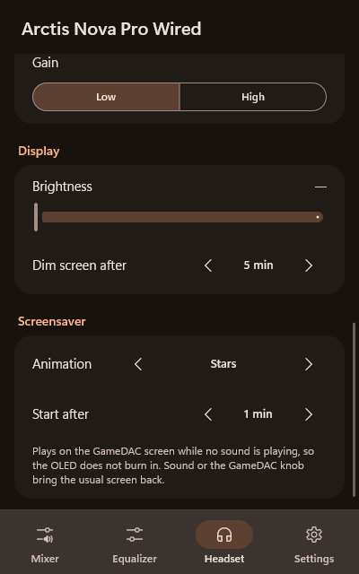
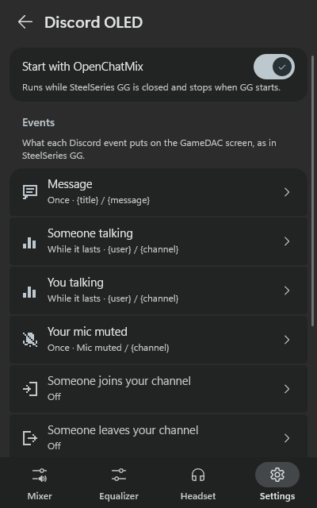
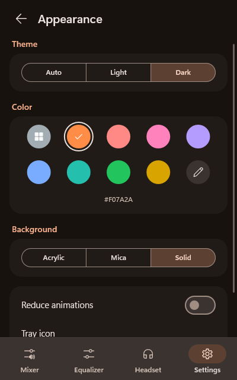
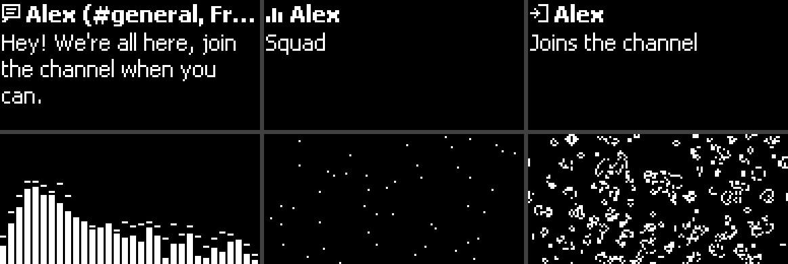

Your game and chat, without GG.
A lightweight tray app for Windows that balances game and chat on any headset and cleans up your microphone. With a SteelSeries Arctis, it also drives the ChatMix dial and the Engine settings, with GG and Sonar closed.
Free and open source · MIT · Windows 10 and 11 · one portable .exe
Works with any headset
Wired, wireless, Bluetooth or speakers
No SteelSeries needed: all of this works with whatever you plug in, and each extra has its own switch.
Game and chat balance
Move the balance from the panel, with hotkeys or with the mouse wheel. A keyboard's volume knob can even work as a ChatMix wheel.
Game, Chat and Media groups
Discord and the Xbox party chat land in Chat on their own, music and videos can stay untouched in Media, and any app can be moved.
A cleaner microphone
Noise suppression (RNNoise, DeepFilterNet, or NVIDIA's on RTX cards), a compressor, an EQ and your own VST plugins, into a virtual cable for Discord, OBS or a game.
Equalizer and plugins, like Sonar
Virtual device mode gives Game, Chat and Media a 10-band parametric EQ with Sonar's presets, Bass Boost and Voice Clarity, plus your own VST plugins.
Ducking and app profiles
Lower the game while someone talks in chat, and switch the balance and equalizers on their own when a game starts.
Output devices in your order
The sound moves to the next device when one disconnects and comes back when it returns. Each group can also play on a device of its own.
Hotkeys and popups
Mute game, chat or media, switch the output or the microphone from anywhere, with a small popup in the corner you choose.
Bluetooth battery
Bluetooth headphones show their battery in the tray too, whenever Windows gets the level from them.
SteelSeries Arctis
Everything from GG's Engine, with GG closed
On a supported Arctis you set it all up in OpenChatMix instead of GG. The settings are stored in the headset itself, so they keep working with no app running at all.
The ChatMix dial
Turn the dial on the GameDAC, the base station or the headset, and the balance moves between your game and chat apps.
Engine settings without GG
Mic volume, sidetone, mic mute LED, gain, volume limiter, ANC and transparency, auto power-off, 2.4 GHz and Bluetooth options.
The headset's own equalizer
The hardware Engine EQ with the SteelSeries presets and your own curve. Any game preset, built-in or from Sonar, can go onto the headset too.
The GameDAC screen
Brightness and dimming, a screensaver against burn-in, a visualizer and Discord notices from GameSense add-ons.
Battery everywhere
In the tray tooltip and as the tray icon, with a warning before it runs out, and the spare battery of the Nova Elite's base station.
Follows the headset's power
Switch the headset off and the sound moves to your speakers; switch it on and it comes back, even though the base station stays plugged in.
Knob popups
Turn the knob on the GameDAC or base station and a popup shows the volume, or the balance in ChatMix mode.
Line out and stream mix
Send the GameDAC's line out to speakers, or make a stream mix of the main sound, the aux input and your microphone.
A look inside
Material 3, in your Windows colors
Light or dark, the Windows accent or a color of your own, over acrylic or mica.






Headsets
Made for SteelSeries Arctis, works with any headset
The hardware dial and the Engine settings need one of these Arctis models; everything else works with any headset.
Get started
Up and running in a minute
Download
Grab OpenChatMix.exe from the latest release. It's portable, so any folder works.
Run it
It isn't code-signed yet, so SmartScreen may ask once: More info → Run anyway. The checksums are on the release page.
Close GG
Quit SteelSeries GG so the dial is free, then open the panel from the tray. A short tour shows the rest.
Like it?
OpenChatMix is free and made in my spare time. If it saved you some RAM and nerves, a coffee is always appreciated.